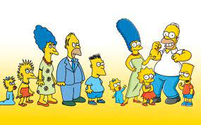
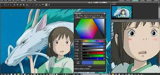
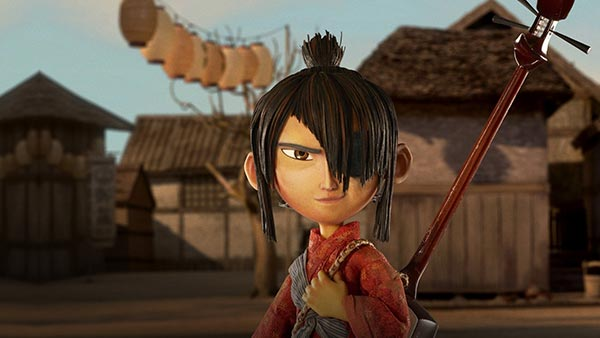

-
Pagina 1
-
Pagina 2
Pagina 3
Estilos de animacion:
Da clic en las flechas para ver las imagenes

Animacion Occidental
Estos son los simpson.

Anime
Una pelicula del estudio Ghibli

Stop Motion
Pelicula realizada con la tecnica del stop motion realizada por el estudio Laika
La animación occidental es una animación llena de variedad, donde diferentes estilos conviven sin ningún problema. Y es cierto que, como todo en este mundo, a medida que pasan los años y la historia sigue su curso, va evolucionando y va cambiando en su manera de expresarse.
Aunque sus orígenes se remontan mucho más atrás, el anime ha atraído al público occidental con su peculiar estilo y sus recursos narrativos. El anime abarca todas las tramas, desde conflictos postapocalípticos hasta desamores de instituto. Descubre más sobre el anime con nuestra guía de las técnicas que emplea y sus producciones más famosas.
La animación stop motion se puede considerar una forma moderna de folioscopio, ya que este estilo de animación "simula" el movimiento de un objeto que, en realidad, permanece estático. Para rodar una película stop motion se toman varias fotos seguidas de un objeto. Entre una foto y la siguiente, la posición o la forma del objeto se modifica ligeramente de forma manual. .
Así se obtiene una serie de imágenes que, cuando se reproducen una tras otra, generan la ilusión de movimiento. Por eso, la verdadera magia de la animación stop motion está en lo que ocurre entre que se fotografía una imagen y la siguiente. La precisión, la paciencia y la atención a los detalles son las principales cualidades que se necesitan para rodar una animación stop motion